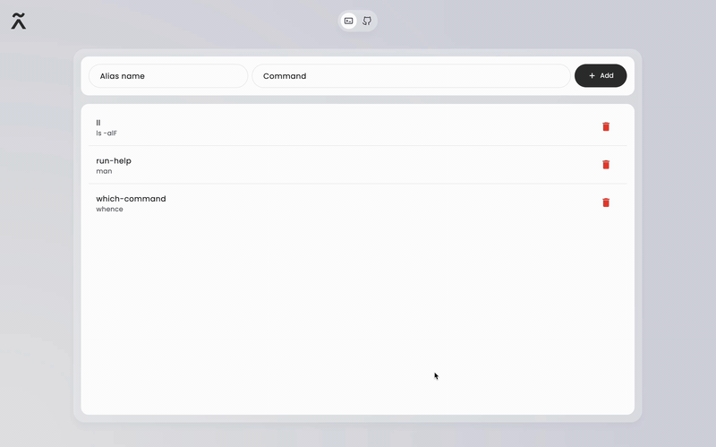

Stop editing config files manually. Create, view, and delete your Git and shell aliases with a clean, intuitive interface. Just type the alias name and command – we handle the rest.
Two input fields, one Add button. That's all you need to manage your aliases.
Just type your alias name (like "ll") and the command (like "ls -alF"). Click Add and you're done.
See all your aliases in a clean list. Each shows the alias name and its corresponding command at a glance.
Remove any alias instantly with the red delete button. No confirmation dialogs, just clean and fast.
Switch between Git and shell aliases with a simple toggle. Manage both types from one interface.
No bloat, no complexity. Just the essential features you need to manage your command aliases efficiently.
Built with Flutter for smooth performance on macOS, Windows, and Linux. Feels native on every platform.
Build from source with Flutter for Windows desktop.
flutter config --enable-windows-desktop flutter pub get flutter build windows
Build from source with Flutter for Linux desktop.
flutter config --enable-linux-desktop flutter pub get flutter build linux